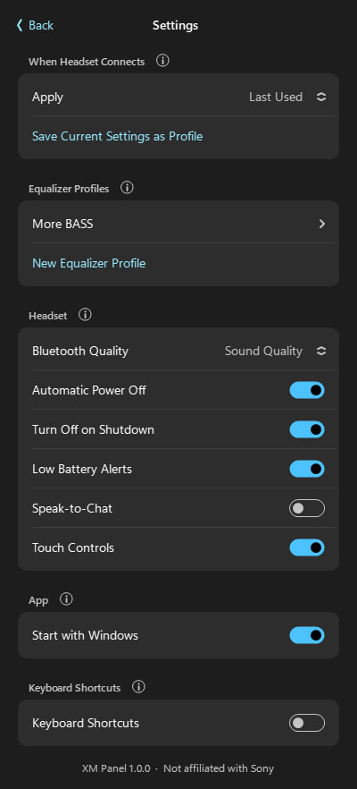
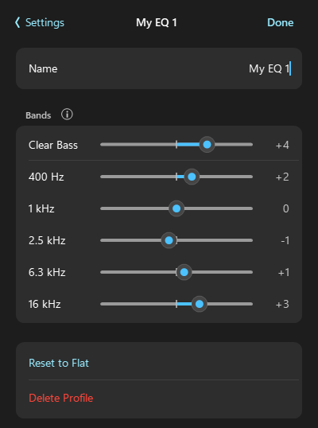

A Sony headphones app for Windows
Sony only makes its headphone app (Headphones Connect, now Sound Connect) for iPhone and Android, so there's no official Sony XM headphones app for PC. XM Panel fills that gap: it gives your WH-1000XM4 (and XM3, XM5 and XM6) the same everyday controls on a Windows 10 or 11 PC. It talks to the headset directly over Bluetooth, the same way Sony's app does, and lives in the system tray like Windows' own quick settings.
Features
Noise control
Switch between noise canceling, ambient sound (level 0–20, Focus on Voice) and off.
Equalizer
Built-in presets plus your own EQ profiles with Clear Bass and 5 bands, with live preview.
Remembers your settings
The headset always powers on in noise canceling or ambient sound. XM Panel switches it back to your settings every time it connects.
Headset settings
DSEE Extreme, Speak-to-Chat, Pause When Taken Off, Touch Controls, Bluetooth quality and Automatic Power Off.
Power and battery
Battery level, low-battery alerts, turn the headset off from the PC, or automatically when Windows shuts down.
Fits into Windows
Light and dark mode, your accent colour, a translucent panel on Windows 11, keyboard shortcuts and start with Windows.
Screenshots


Supported headphones
- Sony WH-1000XM4: tested
- Sony WH-1000XM3: should work (same protocol), untested
- Sony WH-1000XM5 and WH-1000XM6: experimental, untested
How to install
- Pair your headphones with Windows (Settings → Bluetooth & devices).
- Download XMPanel.exe and run it. There's nothing to install.
- If Windows SmartScreen warns that the app is unrecognised, choose More info → Run anyway.
- Click the headphone icon in the system tray.
FAQ
Is there a Sony XM headphones app for Windows?
Not from Sony: its app (Headphones Connect, now Sound Connect) is only for iPhone and Android. XM Panel is a free, unofficial Windows app for Sony WH-1000XM headphones on Windows 10 and 11.
Can I change WH-1000XM4 noise cancelling from my PC?
Yes. Pair the headset with Windows, run XM Panel and click its tray icon to switch between noise canceling, ambient sound and off.
Does it change the equalizer on the headphones?
Yes. EQ presets and custom profiles are written to the headset, so they also apply on your phone.
Does it send any data anywhere?
No. XM Panel works fully offline and only talks to your headphones over Bluetooth. See the privacy policy.